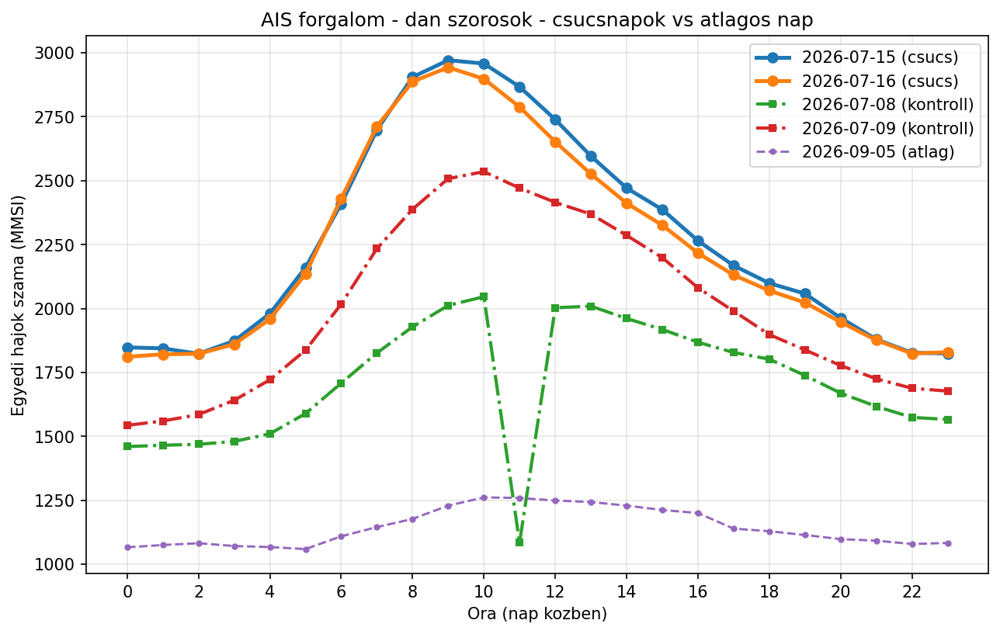
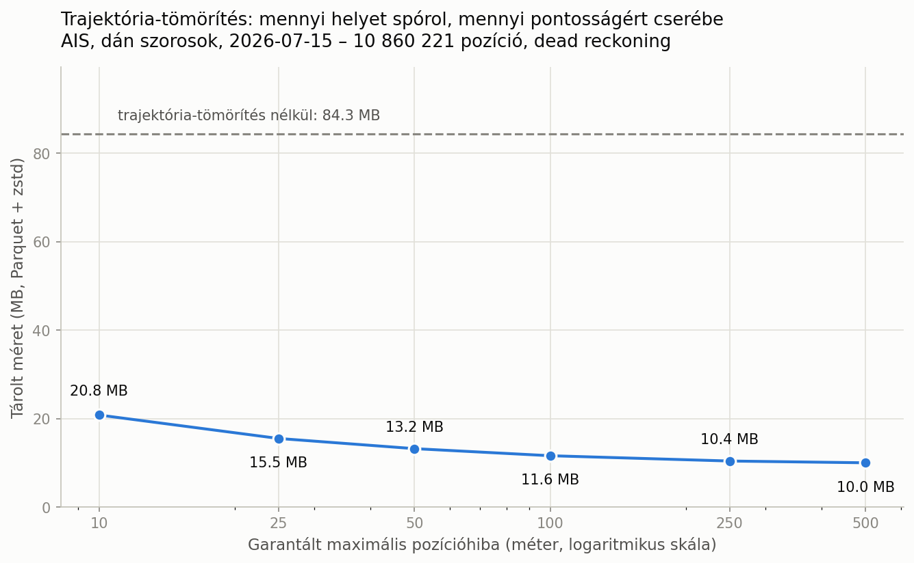

BSc szakdolgozat munkaanyaga. Budapesti Corvinus Egyetem, gazdaságinformatika
Az oldal a szakdolgozathoz készült adatfeldolgozás eredményeit foglalja össze. A mérésekhez tartozó forráskód a kapcsolódó repozitóriumban érhető el. A dolgozat szövegét az oldal nem tartalmazza.
A vizsgált területen egyetlen nap alatt 4 138 különböző hajó fordult meg. A típusok szerinti megoszlás azonban jelentősen eltér attól függően, hogy egyedi hajókat vagy AIS-üzeneteket számolunk.
Hajótípusok két mértékegységben
Ugyanaz a nap, ugyanazok a hajók. Balra a különböző hajók száma, jobbra a tőlük érkezett AIS-üzenetek száma.
Hány hajó
Hány üzenet
| Típus | Hajó | Hajó % | Üzenet | Üzenet % |
|---|---|---|---|---|
| Kedvtelési | 3 200 | 77,3% | 1 788 679 | 37,6% |
| Egyéb / ismeretlen | 278 | 6,7% | 566 479 | 11,9% |
| Teherhajó | 237 | 5,7% | 648 421 | 13,6% |
| Szolgálati | 158 | 3,8% | 672 383 | 14,1% |
| Személyszállító | 133 | 3,2% | 600 626 | 12,6% |
| Tanker | 67 | 1,6% | 199 095 | 4,2% |
| Halászhajó | 65 | 1,6% | 283 951 | 6,0% |
A hajók tevékenységéről az AIS Navigational status mezője
adna felvilágosítást, ez azonban csak a hajók egy részénél áll rendelkezésre.
Az AIS kétféle jeladótípust ismer, és a kettő nem azonos tartalmat sugároz.
A Class A hajók navigációs státusza
A hajó által legtöbbször jelentett navigációs státusz, 715 hajóra vonatkozóan. A mezőt a személyzet kézzel állítja be.
| Státusz (eredeti) | Magyarul | Hajó | Arány |
|---|---|---|---|
| Under way using engine | Géppel úton | 499 | 69,8% |
| Moored | Kikötve | 95 | 13,3% |
| Engaged in fishing | Halászik | 28 | 3,9% |
| Under way sailing | Vitorlával úton | 23 | 3,2% |
| (nem jelentett) | (nem jelentett) | 22 | 3,1% |
| At anchor | Horgonyon | 18 | 2,5% |
| Restricted maneuverability | Korlátozott manőverképesség | 16 | 2,2% |
| Constrained by her draught | Merülése korlátozza | 8 | 1,1% |
| Reserved for future amendment [HSC] | (fenntartott kód, HSC) | 3 | 0,4% |
| Power-driven vessel towing astern | Hátul vontat | 1 | 0,1% |
| Power-driven vessel pushing ahead or towing alongside | Tol vagy oldalt vontat | 1 | 0,1% |
| Reserved for future amendment [WIG] | (fenntartott kód, WIG) | 1 | 0,1% |
Az óránkénti hajószám a nap folyamán 1,63-szeresére nő, majd visszaáll. A típusonkénti bontásból kiderül, hogy az ingadozást gyakorlatilag egyetlen kategória okozza.
Kedvtelési hajók óránként
Egyedi hajók száma a 2026-07-15-i napon. A görbe a világos napszakot követi.
Munkahajók óránként
Ugyanaz a nap, önálló léptéken ábrázolva. Ezek a görbék lényegesen laposabbak. A külön ábra azért szükséges, mert a nagyságrendi különbség miatt közös tengelyen nem lennének értelmezhetők.
| Óra | Összes hajó | Üzenet | Kedvtelési | Áruszállítás | Személyszállító | Szolgálati | Halászhajó | Egyéb |
|---|---|---|---|---|---|---|---|---|
| 00 | 1 847 | 156 954 | 1 262 | 150 | 107 | 129 | 51 | 148 |
| 01 | 1 844 | 153 808 | 1 267 | 145 | 105 | 128 | 53 | 146 |
| 02 | 1 823 | 147 898 | 1 252 | 147 | 100 | 127 | 52 | 145 |
| 03 | 1 873 | 151 813 | 1 295 | 150 | 103 | 128 | 53 | 144 |
| 04 | 1 980 | 163 510 | 1 393 | 149 | 104 | 129 | 55 | 150 |
| 05 | 2 160 | 180 953 | 1 557 | 152 | 107 | 133 | 55 | 156 |
| 06 | 2 409 | 201 349 | 1 798 | 154 | 109 | 134 | 58 | 156 |
| 07 | 2 698 | 238 982 | 2 081 | 164 | 110 | 133 | 57 | 153 |
| 08 | 2 905 | 269 749 | 2 275 | 159 | 112 | 132 | 56 | 171 |
| 09 | 2 971 | 279 627 | 2 343 | 153 | 115 | 134 | 56 | 170 |
| 10 | 2 958 | 272 856 | 2 333 | 154 | 113 | 138 | 55 | 165 |
| 11 | 2 867 | 261 810 | 2 257 | 153 | 109 | 134 | 58 | 156 |
| 12 | 2 739 | 248 901 | 2 123 | 162 | 109 | 133 | 55 | 157 |
| 13 | 2 596 | 236 829 | 1 979 | 159 | 108 | 133 | 56 | 161 |
| 14 | 2 471 | 220 832 | 1 859 | 162 | 107 | 134 | 56 | 153 |
| 15 | 2 387 | 213 205 | 1 770 | 162 | 107 | 133 | 59 | 156 |
| 16 | 2 265 | 200 585 | 1 651 | 166 | 107 | 135 | 50 | 156 |
| 17 | 2 168 | 189 733 | 1 555 | 164 | 105 | 135 | 52 | 157 |
| 18 | 2 099 | 180 008 | 1 490 | 164 | 104 | 137 | 52 | 152 |
| 19 | 2 058 | 168 586 | 1 451 | 167 | 99 | 137 | 49 | 155 |
| 20 | 1 963 | 161 233 | 1 368 | 158 | 99 | 134 | 50 | 154 |
| 21 | 1 879 | 155 825 | 1 299 | 147 | 102 | 133 | 49 | 149 |
| 22 | 1 827 | 152 403 | 1 248 | 149 | 104 | 131 | 49 | 146 |
| 23 | 1 823 | 152 185 | 1 249 | 148 | 104 | 129 | 49 | 144 |


A Parquet sorcsoportonként minimum- és maximumstatisztikát tárol minden oszlopról. Ha a térben közeli pontok egy sorcsoportba kerülnek, egy kis területre szűrő lekérdezés a sorcsoportok nagy részét be sem olvassa. A pontokat ehhez H3-cella (8-as felbontás, kb. 0,74 km²) szerint rendeztem. A változatok azonos adatot, kódeket és sorcsoport-méretet használnak; csak a sorrend tér el, és mindegyik azonos lekérdezési eredményt adott.
Méret és lekérdezési idő tárolási sorrend szerint
A 2026-07-15-i nap pozíciói, 109 sorcsoportban. Térbeli lekérdezés: a Nagy-Balti-híd környéke; időbeli: 09–10 óra. Öt ismétlés mediánja, meleg gyorsítótárral; az időmérések futásonként akár 30%-ot is szórnak, az átugorható sorcsoportok száma determinisztikus.
| változat | MiB | térbeli: átugorható | térbeli | időbeli: átugorható | időbeli |
|---|---|---|---|---|---|
| eredeti (hajó, idő) sorrend | 68,7 | 1 / 109 | 117 ms | 0 / 109 | 65 ms |
| eredeti sorrend + h3 oszlop | 70,0 | 1 / 109 | 125 ms | 0 / 109 | 67 ms |
| H3 szerint rendezve | 76,7 | 94 / 109 | 25 ms | 0 / 109 | 80 ms |
| idő szerint rendezve | 83,9 | 0 / 109 | 188 ms | 102 / 109 | 7 ms |
Beolvasandó sorcsoportok a lekérdezett terület méretének függvényében
Azonos középpontú, egyre nagyobb területek, a beolvasandó sorcsoportok arányában. A vízszintes tengely a terület méretét mutatja, nem lineáris léptékben.
| Terület | Napi sorok aránya | Olvasott sorcsoport: H3 / eredeti / idő | H3-gyorsulás |
|---|---|---|---|
| 5 km² | 0,07% | 11 / 107 / 109 | 5,5× |
| 31 km² | 0,86% | 13 / 108 / 109 | 4,9× |
| 124 km² | 1,43% | 14 / 108 / 109 | 5,0× |
| 496 km² | 3,99% | 16 / 108 / 109 | 4,1× |
| 1 983 km² | 8,24% | 19 / 108 / 109 | 3,4× |
| 7 931 km² | 19,07% | 44 / 109 / 109 | 2,0× |
| 27 138 km² | 62,98% | 87 / 109 / 109 | 1,1× |
Az óránkénti összes hajószám helyett ez a mutató azt számolja, hány kereskedelmi hajó (teherhajó és tanker) kelt át ténylegesen a szorosokon. Két kapuvonal fut partról partra: a Nagy-Balti-övön (É 55,40°) és az Øresundon (É 56,07°). A vonal menti H3-cellafolyosó szűri a vizsgált pozíciókat; átkelés akkor van, ha egy hajó két egymást követő pozíciója a vonal két oldalára esik, legfeljebb 10 perc különbséggel.
Összevetés az IMF PortWatch Øresund-adatával
Kereskedelmi átkelések naponta. A PortWatch AIS-ből származtatott, független intézményi becslés.
| nap | saját: tanker | saját: teher | saját: össz. | PortWatch: tanker | PortWatch: össz. | arány |
|---|---|---|---|---|---|---|
| 07-08 szerda (kontroll) | 11 | 34 | 45 | 8 | 31 | 1,45 |
| 07-09 csütörtök (kontroll) | 14 | 48 | 62 | 9 | 41 | 1,51 |
| 07-15 szerda (lezárás) | 17 | 47 | 64 | 10 | 45 | 1,42 |
| 07-16 csütörtök (lezárás) | 12 | 41 | 53 | 8 | 45 | 1,18 |
| 09-05 szombat | 10 | 25 | 35 | 7 | 32 | 1,09 |
A csatornalezárás hatása a kapuvonal-metrikával
Kereskedelmi átkelések a két kapun összesen; a 2026-07-08-i adathiányos 11. óra minden napból kihagyva.
| nap | Nagy-Balti-öv | Øresund | összesen |
|---|---|---|---|
| 07-08 szerda (kontroll) | 47 | 44 | 91 |
| 07-09 csütörtök (kontroll) | 45 | 62 | 107 |
| 07-15 szerda (lezárás) | 51 | 61 | 112 |
| 07-16 csütörtök (lezárás) | 43 | 51 | 94 |
| 09-05 szombat | 51 | 32 | 83 |
A forrásadatban több, egymástól független hibatípus azonosítható:
Type of mobile értéket jelentett, ami a mező jelentése alapján nem lehetséges;lat = 91,0), 1,34% pedig érvényes tartományba eső, de földrajzilag kizárható koordináta;Az első három hibatípus az eddigi eredményeket nem befolyásolta, mert a területi szűrés kizárja őket. Ez azonban a szűrés mellékhatása, nem célzott adattisztítás következménye, és a dolgozat ekként rögzíti.
Minden közölt számhoz rögzítve van, melyik szkript, milyen paraméterekkel és mikor állította elő. A dokumentáció a visszavont állításokat is tartalmazza, az eredeti értékeket áthúzva.